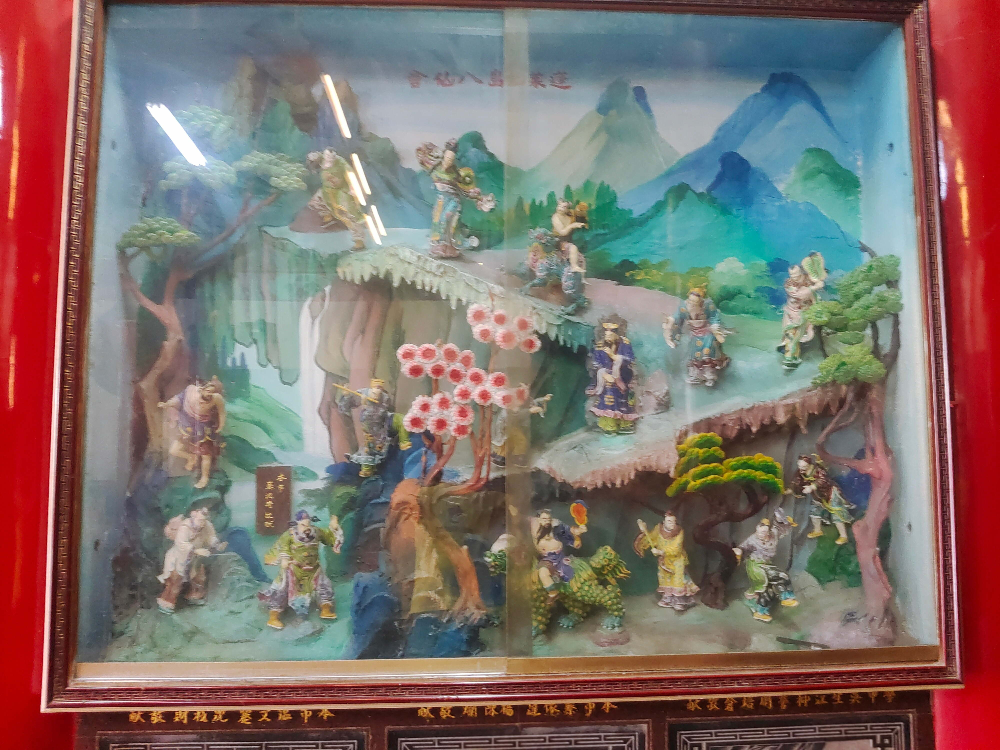

蓬萊仙島八仙會
會說話的石頭

圖 蓬萊仙島八仙會
堯傳位給舜
蓬萊仙島的傳說---傳說蓬萊位於渤海之中，望之如雲，明刊本的《山海經》將蓬萊畫作懸浮在海面上空的樓閣，由一簇祥雲託舉著，這是仙人宮室，皆以金玉為之，鳥獸也都是白色的。蓬萊是仙人的居所。蓬萊仙島神話傳說中位於東海的三座仙山，名曰蓬萊、方丈、瀛洲。蓬萊仙山與西方的崑崙山並列，都是神仙聚集的地方。據說八仙過海要到達的地方就是蓬萊仙島。那個恰比神界仙境的地方，仙霧繚繞，海市蜃樓，雲捲雲舒，所有的都是無比的讓人心馳神往。還有著名的八仙過海的故事，加上各大影視劇的蓬萊仙境，使的神仙的故事，民間坊廣為流傳在中。在蓬萊仙島，那裡使人們遙不可及、嚮往能夠得道升仙去往的神仙居住的地方。那裡風光旖旎，雲霧繚繞，仙氣蔓延。 「八仙過海」傳說起源地蓬萊---八仙和蓬萊的緣分，當從呂洞賓說起。《白雲觀志》中，呂洞賓為「蓬萊派」，呂洞賓在自己的詩里曾寫道：「獨坐蓬萊觀宇宙，挑劍眉間海上游。」鍾離權在寫給呂洞賓的詩里也表示「得道高僧不易逢，幾時歸去願相從。自言住處連滄海，別是蓬萊第一峰。」可見呂洞賓乃至八仙，都和蓬萊有著妙不可言的關係。相傳鐵拐李、漢鍾離、張果老、韓湘子、呂洞賓、何仙姑、藍采和及曹國舅八仙，赴王母娘娘蟠桃盛會歸來，在蓬萊飲酒作樂。酒至酣時，鐵拐李意猶未盡，提議要過海一游。小夥伴們激情四溢，齊聲附和，並說定要各憑道法渡海，不得乘舟。眾仙聚到海邊，各自亮出法寶，各顯神通，乘風破浪，飄然而去。自此，留下了一段膾炙人口的山海傳奇。千百年來，這一故事廣為流傳，家喻戶曉，並且結晶出一句俗諺———八仙過海，各顯神通。
資料來源：https://kknews.cc/travel/on3lb56.html